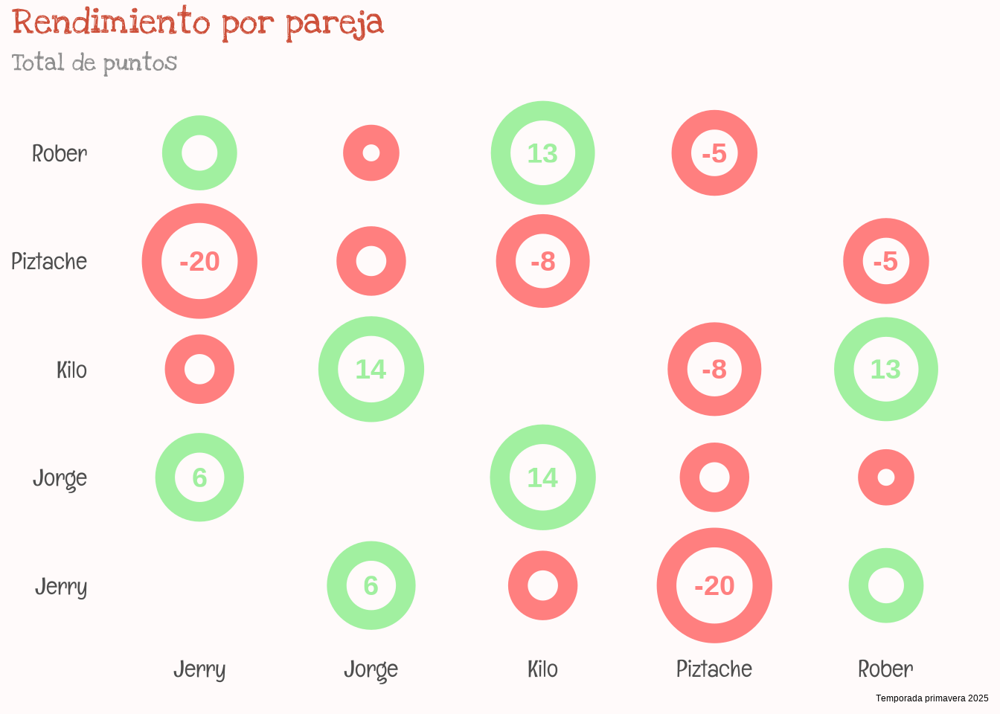
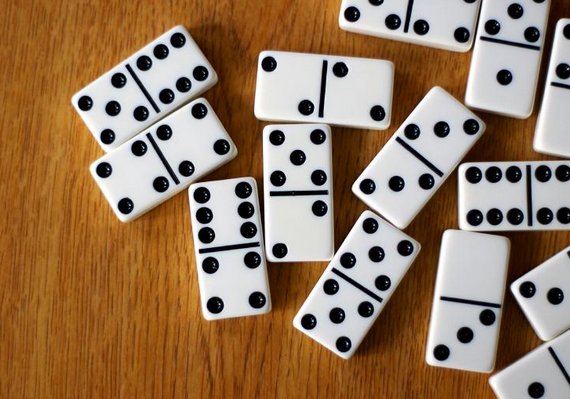
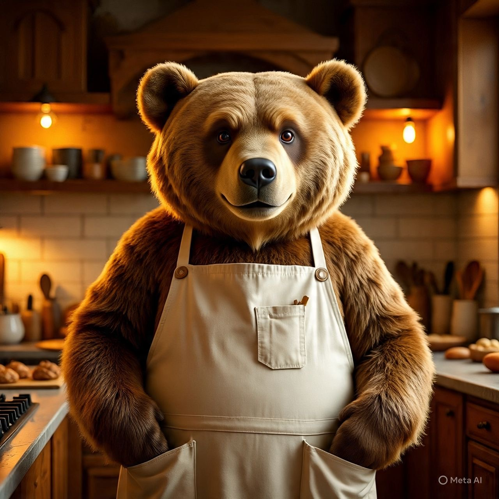
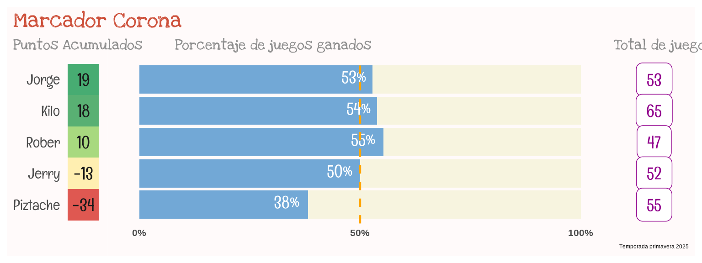
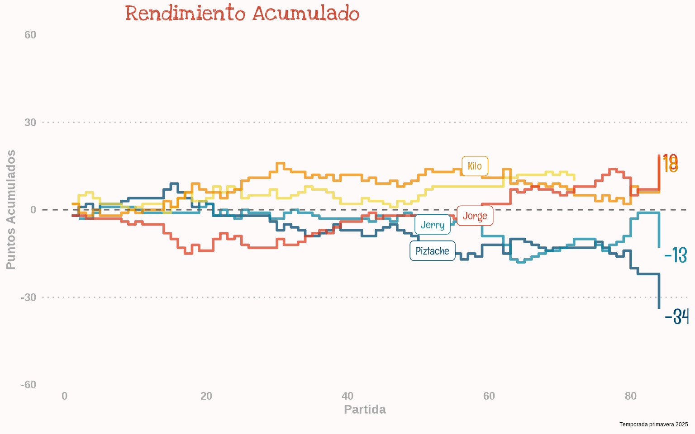
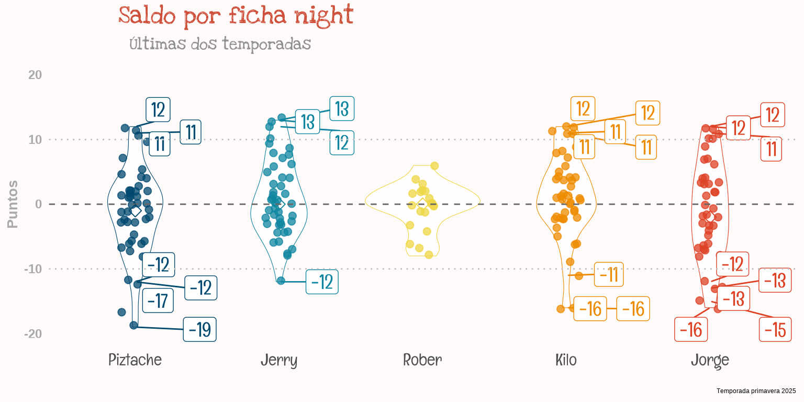
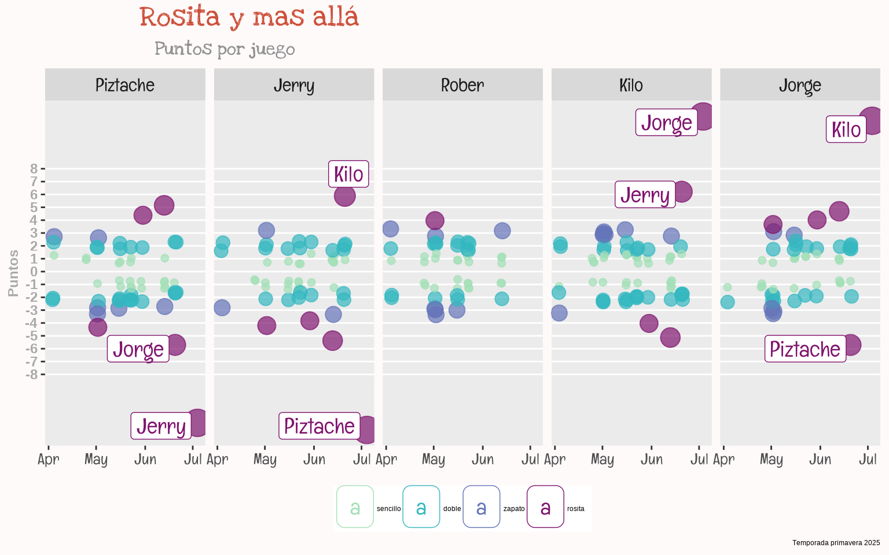

La Ficha
Dominó, el juego mágico de fichas que nos transporta a un mundo de estrategia y números! Entre amigos el dominó es ley, con cervezas, risas y algún que otro ¡zapatazo!. 
La ficha no perdona, compa: aquí se requiere maña, memoria de elefante y un toque de suerte para no salir atorado. Algunos juegan bien formalitos, con las tres R sagradas: respeta la mano, repite la ficha y refunde al de al lado… ¡pero otros simplemente les vale madres! y buscan la gloria eterna aunque acaben errabundos en el valle de las sombras”.
Campeón de la temporada

¡Esta temporada estuvo de infarto, señores! La penúltima noche nos dejó con el torneo a medias y un juego pendiente de triple puntos que tenía a todos con los nervios de punta. Pero cuando ya nadie lo esperaba, ¡Kilate y PetaGeorge se levantaron como los cerros Atlas del continente africano! y sepultaron al resto de competidores con un juego bendito de 12 puntos.
Y como los grandes, ¡el Gummy Bear (aka PetaGiorgia, aka Oso Mandilón) llegó en el último suspiro, raspando uñas y con un golpe sagrado que afirmó su dominio de ficha para amarrar el triunfo! 🏆🔥💪
(Y cabe mencionar que Piztachx quedó barriendo el sotáno con un puntaje total acumulado de -34!) 😏🍿
Marcador Corona
¡Vaya temporada de locura, compadres! Todo se definió en un juego final a cuchillo de 12 puntos —12 navajazos en el corazón de Jerry y Piztache, que sepultaron cualquier esperanza de vida. El Oso, habiendo arrancado la temporada más perdido que turista en las calles del Centro, aguantó vara y como los osos de Alaska, persistió en la búsqueda del salmón 🐻🐟 , escalando posiciones como si nada, hasta llegar a la cima. Mientras, Piztache hizo lo contrario: arrancó como cohete en Año Nuevo… pero se quedó sin gasolina y terminó en el sótanito de la tabla, raspando lona.
Y Rober, el favorito de la casa, iba volando hacia su segundo título… ¡hasta que las dos últimas noches le jugaron chueco! Su ausencia lo mandó del primer lugar al tercer escalón del podio. (Moraleja: en el dominó, como en el amor, no falte a la cita, carnal… o te bailan!)* 😅🏆
¡Así es el juego, mi gente! Unos suben, otros bajan, y al final solo queda el que aguanta la presión… y la desvelada. 🍻✨


Rendimiento por pareja
¡La pareja más en llamas de la temporada? ¡Kilata y PG!, la dupla dinámica que le dio atole con el dedo a todos. De cerca les pisaban los talones Kilate y Rober, que no se rajaron y mantuvieron el ritmo como metronomos con cheve* en mano*.
Pero si hablamos de el hoyo negro de la temporada, ¡Jerry y Piztache se llevan el premio! Con un puntaje acumulado de -20, quedaron más abajo que los sueldos en diciembre… 😱
(Moraleja: en el dominó, si no estás pa’ arriba, estás pa’ bajo… ¡y estos últimos pa’ muy abajo!) 🏆💥

El Rosita y más allá
El juego más grosero de la temporada fue ese juego final de 12 puntos, donde Jerry y Piztachx cayeron como Caín y Abel en el último round. Fue doloroso, con una llaga de aquellas, púrpura y exudando pus que solo curan los shamanes de Comitán, Chiapas.
